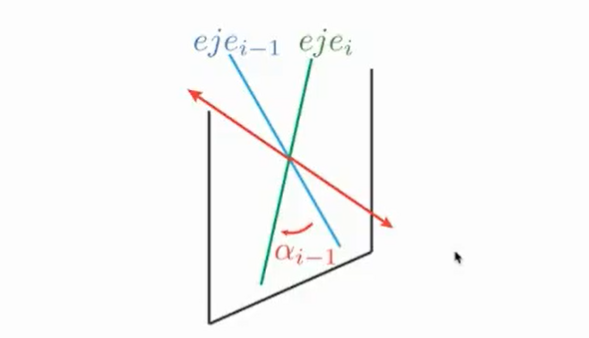

Introducción - Clase 6/10/2021
Espacio Euclídeo
Es un espacio donde se cumplen los axiomas de Euclides de la geometría. Sobre los números reales de dimensión finita.
La recta real, el plano euclideo, el espacio tridimensional de la geometria euclidiana son casos especiales de espacios Euclideos de 1,2,3 dimensiones.
Es un espacio vectorial, con un producto interno. Un espacio Euclideo es un conjunto continuo de puntos, juntos con una estructura adicional que es capaz de describir la ortogonalidad y distancia.
Sin el espacio euclideo muchas de las aplicaciones creadas en ingeiería no serian capaces de existir debido a que todas estas están basadas bajo este espacio
Producto Escalar
Asocia a cada par de vectores de un espacio vectorial con un valor escalar. Introduce el concepto de longitud y ángulo entre dos vectores y provee el concepto de ortogonalidad entre vectores
Ademas, se llama Espacio vectorial euclídeo a todo espacio vectorial real E dotado de un producto escalar. Es decir que si tomo dos puntos del espacio vectorial y puedo aplicar un producto escalar será un Espacio vectorial euclídeo
Norma
La norma se puede percibir por tanto como el módulo del vector, es decir la magnitud o que tan grande es este. De igual forma tiene otras propiedades como que para todo vector diferente de 0, la norma de este será diferente de 0.
Se cumplen asimismo dos desigualdades, la primera conocida como la desigualdad de Schwarz donde el la norma del producto de dos vectores siempre será menor o igual que el producto de la norma de dos vectores. Adicionalmente la desigualdad del triangulo donde nos dice que la norma de la hipotenusa siempre será menor que que la suma de las normas de los catetos o rectas que la componen.
Ángulo
Para el concepto de ángulo entre dos vectores, nos haremos hincapie del producto punto de dos vectores, donde estos se relacionan de la siguiente forma:
A partir de la anterior relación podemos observar que de manera natural existe una relación ángular entre ambos vectores, por tanto podemos definir el ángulo de dos vectores de la siguiente forma:
A partir de lo anterior tambien se deriva la proyección de un vector, y por tanto podemos definir la proyección de un vector como el reflejo o proyección de un vector sobre otro, es decir que desde la posición de un vector que tanto se mueve uno siguiendo otro vector.

Si el Coseno del ángulo entre dos vectores es igual a 1, podemos decir que nuestros vectores son Colineales, contrario a si obtenemos un ángulo de 90 grados el cual tiene 0 como coseno, el cual se denominan ortogonales o perpendiculares.
Si dos vectores son colineales por tanto se puede decir que son linealmente dependientes, en el caso contrario se consideran linealmente independientes.
Sistemas ortogonales y ortonormales
Las bases ortonormales son aquellas combinaciones lineales de vectores ortogonales unitarios que me permiten recrear todo el espacio euclideo en cuestión. Por ejemplo los vectores unitarios x,y,z conforman la base para un espacio euclideo tridimensional.
Puntos
En geometria, el punto es uno de los entes fundamentales.
- El punto es una figura geometrica adimensional: No tiene longitud, area, volumen, ni otro ángulo dimensional
- No es un objeto físico
- Se puede trazar una linea recta que pase por dos puntos
- Se puede prolongar indefinidamente una linea recta a partir de una recta finita
- Se puede trazar una circunferencia con centro y radio dado
- Todos los ángulos rectos son iguales
- Si una linea recta que corta a otras dos rectas forma de un mismo lado con ellas ángulos interiores cuya suma es menor que dos rectos, las dos últimas rectas prolongadas infintamente se cortan del lado en que la suma de los ángulos es menor que dos rectos
Vector
Un vector es un elemento matemático que representa un segmento de linea con dirección y sentido. Es un concepto matemático con interés físico, ya que permite representar o describir las magnitudes vectoriales, así como operar con ellas.
Un vector por tanto estará dotado de:
- Modulo: Longitud, proporcional al valor de la magnitud física
- Dirección y sentido: Orientación del segmento, indicada mediante una flecha y que permite definir cual es su origen y cual es su extremo
- Punto de aplicación:Origen del segmento
- Recta Soporte: Recta a la que pertenece el segmento, definida mediante el punto de aplicación y la dirección marcada por el vector

Producto Vectorial
El producto vectorial es una operación que nos permite multiplicar dos vectores en el espacio trimendional, el producto en dimensiones mayores no existe.
De una segunda forma matematica el producto vectorial se puede definir de la siguiente forma:
Donde si sumamos la matriz generada con su transpuesta y obtenemos de resultado "0", podemos decir que una de las propiedades de nuestra matriz es que es antisimetrica.
Sistemas de Coordenadas
Un sistema de coordenadas, se puede definir como un origen y un conjunto de vectores que lo conforman. Por otra parte, las coordenadas son escalares que definen un lugar en el espacio euclidiano utilizando la base del espacio como una combinación lineal.
Para garantizar que un sistema de coordenadas o un espacio euclídeo sea ortonormal hay que garantizar que el vector independiente i multiplicado por si mismo sea igual a 1 y que la multiplicación por cada uno de los vectores restantes sea 0, si logró satisfacer esas dos condiciones nuestro sistema de coordenadas será ortonormal. Donde la cantidad de vectores que componen el espacio es finita.

Por tanto expresamos el vector en el sistema de coordenadas planteado, sin embargo con el mismo vector pero la expresión variará en sistemas de coordenadas diferentes, por tanto en sistemas de coordenadas con distintas bases, se verán de manera diferente. Por tanto para varios sistemas de coordenadas si el vector es el mismo, lo que cambia entre los sistemas será las coordenadas.
Descripción Espacial
Una descripción se utiliza para especificar los atributos de varios objetos con lo que trata un sistema de manipulación. Para representar un cuerpo matematicamente en un espacio lo tratamos como una nube de puntos
Descripción de Eslabones 27-10-2021
Todos los eslabones tienen minimo dos articulaciones, y una distancia asociada entre articulaciones. Por tanto un parametro caracteristico es la longitud, el cual se encuentra como la perpendicular común entre las dos articulaciones.
Observando las dos articulaciones, siempre se observará un eje que une a ambas articulaciones y un ángulo entre dichos ejes que proyectan las articulaciones. El ángulo de torsión (\alpha) del eslabón se mide sobre la normal común entre ambos ejes. Con esos dos parametros, seremos capaces de graficar cualquier eslabón. La normal común puede ir en ambas direcciones pero esta dirección influye en la dirección de alfa, por tanto el signo del ángulo está asociado a la regla de la mano derecha.
Conexiones de eslabones
Dos eslabones se pueden unir mediante pares cinematicos menores, estás pueden ser prismaticas o pueden ser tipo, restrigiendo por tanto los tipos de movimiento
que son capaces de realizar.
Un eslabón es un cuerpo rígido que hace parte de una cadena cinematica, sin embargo un eslabón tambien se puede definir como una longitud y un ángulo de torsión.
Tengo que ver por tanto donde está ubicada la perpendicular común, el ángulo de torsión y el punto donde se encuentra la perpendicular común.
La distancia de la articulación es la longitud que existe entre dos eslabones que están únidos mediante una articulación.
Esta distancia de articulación puede ser variable si la articulación es de tipo prismatica que se puede desplazar a través del eje.
Tenemos 4 parametros hasta el momento, 2 parametros para definir el eslabón y 2 parametros para definir una articulación.
En una articulación de tipo rotacional la longitud será fija, sin embargo, el ángulo de torsión será variable en contraste a la articulación traslacional
o prismatica.
En resumen, la longitud y el ángulo de torsión en un eslabón es constante y fijo, en contraposición de la articulación, donde o la longitud o el ángulo pueden ser variable.
Por convención la dimensión de la base siempre será 0, de igual forma el ángulo de torsión para la base la puedo tomar como 0.
De igual forma para el efector final puedo tomar su dimensión como 0, y el ángulo de torsión también sea cero.
Eslabón: es un cuerpo rígido que define la relación entre dos ejes de articulación adyacentes de un manipulador
Parámetros de Denavit-Hartenberg
Se asigna un sistema de coordenadas por cada eslabón presente, en el espacio euclídeo, se ubica en primer lugar el orígen, este en el lugar de la articulación, luego el eje Z, se traza colineal al eje de la articulación y el eje x se coloca perpendicular al eje de la articulación o colineal a la longitud del eslabón.

Ejemplos
Benavit 2/11/2021
El resumen de los parametros se puede apreciar en la siguiente imagen:
Mientras que los pasos para asignar un marco de referencia a un eslabón o vínculo son los siguientes:
Ejercicio
A continuación se presenta un ejercicio de resolución de Denavit-Hartenberg: El primer paso es, contar los eslabones móviles, las articulaciones, identificar las longitudes de los eslabones, y determinar los ejes de las articulaciones

Una vez identificado esos parametros físicos, pasaremos a ubicar las normales comunes, como los ejes son paralelos la normal común se puede ubicar en cualquier lugar debido a que son paralelos, sin embargo las ubicaremos a lo largo del eslabón. Los origines luego se ubican en la interesección de los ejes de las articulaciones con las normales comunes.
Siguiente paso es ubicar los ejes asociados a cada origen, en este caso una vez seleccionados los ejes Z, los eje X se ubican en dirección de los eslabones o normal al plano perpendicular de la normal común. El sistema de coordenadas 0 se puede ubicar coincidente sobre 0 por convención para facilitar calculos posteriores. De igual forma el sistema de coordenadas final , el que se ubica en el efector final de igual forma se ubica sobre el eje de la última articulación.
Tabla de parametros de Denavit-Hartenberg
Para construir esta tabla haremos uso de los ángulos de torsión de los eslabones, las distancias entre ejes y los parametros asociados a cada eslabón.
Donde haciendo uso de la tabla de resumen de parametros mostrada en la imagen anterior, una vez es rellenada la tabla se obtiene lo siguiente
Para el primer eslabón, 3 de los parametros son constantes y para este caso particular son iguales a cero, excepto el último parametro de rotación
el cual es variable y tendrá un valor de q_1.
Existe un valor adicional, llamado Offset que va de acuerdo a la posición Home del robot, por tanto si nuestro Marco base y Marco 1 no son colineales esta
diferencia entre los marcos será llamado Offset.
Cinematica Inversa 23/11/2021